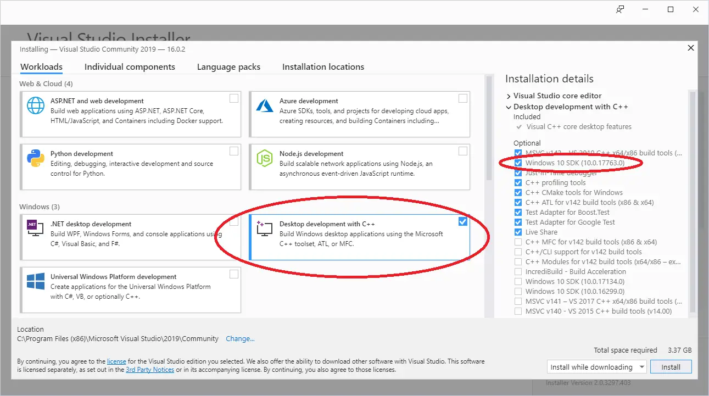
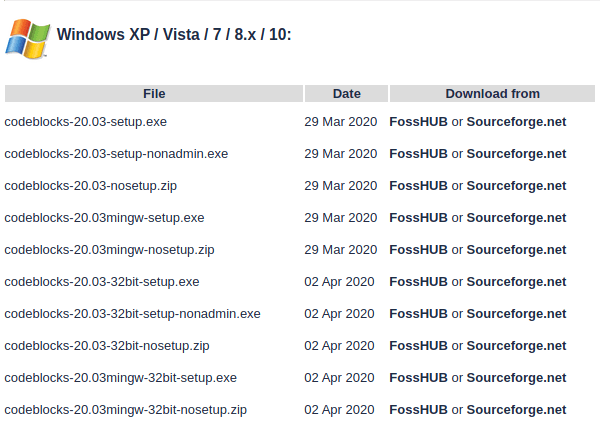
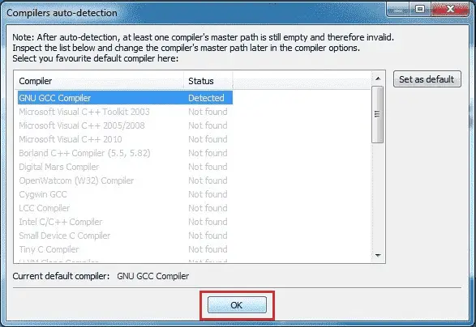

0.6 — 安装集成开发环境（IDE）
一种 集成开发环境（IDE） 是一种旨在简化程序开发、构建和调试的软件。
典型的现代 IDE 通常包含：
- 某种用于轻松加载和保存代码文件的方式。
- 一个具有编程友好特性的代码编辑器，例如行号、语法高亮、集成帮助、名称补全和自动源码格式化。
- 一个基本的构建系统，能够编译和链接程序生成可执行文件，并运行它。
- 一个集成的调试器，用于更轻松地查找和修复软件缺陷。
- 某种安装插件的方式，以便修改 IDE 或添加诸如版本控制等功能。
部分 C++ IDE 会为您安装并配置 C++ 编译器和链接器，另一些则允许您自行选择并接入（单独安装的）编译器和链接器。
虽然您可以分开完成所有这些工作，但安装一个 IDE 并从单一界面完成所有操作要简单得多。
那么，我们来安装一个吧！
选择 IDE
显然下一个问题是“选哪个？”。许多 IDE 是免费的，如果您想试多个，也可以安装多个。下面我们推荐几个我们比较喜欢的。
如果您心里有其他 IDE，那也很好。我们在这些教程中展示的概念通常适用于任何不错的现代 IDE。不过，不同的 IDE 使用不同的名称、布局、快捷键映射等……您可能需要在您的 IDE 中搜索一下来找到对应的功能。
提示
为了充分利用本网站，我们建议安装一个附带至少支持 C++17 的编译器的 IDE。
如果您受限于只能使用支持 C++14 的编译器（由于教育或商业原因），大多数课程和示例仍然适用。但是，如果您遇到使用 C++17（或更新版本）特性的课程，而您使用的是较旧的语言编译器，那么您将不得不跳过它或将其转换为您的版本，这未必容易。
您不应使用任何不支持至少 C++11（通常被认为是 C++ 的现代最低标准）的编译器。
我们建议安装最新版本的编译器。如果您无法使用最新版本，以下是支持 C++17 的绝对最低编译器版本：
- GCC/G++ 7
- Clang++ 8
- Visual Studio 2017 15.7
Visual Studio (适用于 Windows)
如果您在 Windows 10 或 11 机器上进行开发，我们强烈建议您下载 Visual Studio 2022 Community。
运行安装程序后，您最终会看到一个屏幕，询问您要安装什么工作负载。选择 使用 C++ 的桌面开发。如果不这样做，C++ 功能将不可用。
屏幕右侧默认选中的选项应该没问题，但请确保 Windows 11 SDK （或 Windows 10 SDK （如果那是唯一可用的）被选中。Windows 11 SDK 应用程序可以在 Windows 10 上运行。

Code::Blocks (适用于 Linux 或 Windows)
如果您在 Linux 上进行开发（或者您在 Windows 上进行开发但希望编写易于移植到 Linux 的程序），我们推荐 Code::Blocks。Code::Blocks 是一个免费、开源、跨平台的 IDE，可以在 Linux 和 Windows 上运行。
对于Windows用户
请确保获取包含 MinGW 的 Code::Blocks 版本（应该是文件名以以下结尾的那个 mingw-setup.exe）。这会安装 MinGW，其中包括 GCC C++ 编译器的 Windows 移植版：

Code::Blocks 20.03 自带一个过时版本的 MinGW，仅支持 C++17（目前比最新版 C++ 落后一个版本）。如果你想使用最新版 C++（C++20），则需要更新 MinGW。请按以下步骤操作：
- 按上述步骤安装 Code::Blocks。
- 如果 Code::Blocks 已打开，请将其关闭。
- 打开 Windows 文件资源管理器（快捷键 Win-E)。
- 导航到你的 Code::Blocks 安装目录（通常是 C:\Program Files (x86)\CodeBlocks）。
- 将“MinGW”目录重命名为“MinGW.bak”（以防出错）。
- 打开浏览器并访问 https://winlibs.com/。
- 下载更新版本的 MinGW-w64。你可能需要选择 Release Versions -> UCRT Runtime -> LATEST -> Win64 -> without LLVM/Clang/LLD/LLDB -> Zip archive。
- 将解压后的“mingw64”文件夹提取到你的 Code::Blocks 安装目录中。
- 将“mingw64”重命名为“MinGW”。
确认更新后的编译器可正常工作后，你可以删除旧文件夹（“MinGW.bak”）。
对于Linux用户
某些 Linux 发行版可能缺少运行或编译 Code::Blocks 程序所需的依赖。
基于 Debian 的 Linux 用户（如 Mint 或 Ubuntu 用户）可能需要安装 build-essential 软件包。在终端命令行中执行以下命令： sudo apt-get install build-essential。
Arch Linux 用户可能需要安装 base-devel 包。
其他Linux变体（发行版）的用户需要确定他们对应的包管理器及软件包。
当你首次启动Code::Blocks时，可能会看到一个 编译器自动检测 对话框。如果是，请确保 GNU GCC Compiler 被设置为默认编译器，然后选择 OK 按钮。

问：如果我收到“Can’t find compiler executable in your configured search paths for GNU GCC Compiler”错误，该怎么办？
尝试以下操作：
- 如果你使用的是Windows，请确保下载的是带MinGW的Code::Blocks版本。就是名称中包含“mingw”的那个。
- 尝试进入设置、编译器，然后选择“重置为默认值”。
- 尝试进入设置、编译器、工具链可执行文件选项卡，并确保“编译器安装目录”设置为MinGW目录（例如C:\Program Files (x86)\CodeBlocks\MinGW）。
- 尝试完全卸载，然后重新安装。
- 尝试使用其他编译器。
Visual Studio Code（适用于有经验的Linux、macOS或Windows用户）
Visual Studio Code（也称为“VS Code”，不要与名称相似的“Visual Studio Community”混淆）是一款代码编辑器，因其快速、灵活、开源、支持多种编程语言并适用于多个不同平台而成为经验丰富的开发者的热门选择。
缺点是VS Code比本列表中的其他选择更难正确配置（在Windows上也更难安装）。在继续之前，我们建议阅读下面链接的安装和配置文档，以确保你理解并熟悉相关步骤。
警告
本教程系列没有提供VS Code的完整说明。
Visual Studio Code 不是 C++初学者的好选择，读者反映在安装和正确配置Visual Studio Code用于C++时遇到了许多不同的挑战。
除非你之前已经熟悉Visual Studio Code，或者有调试配置问题的经验，否则请不要选择这个选项。
我们无法在此站点提供Visual Studio Code的安装或配置支持。
向用户glibg10b致敬，他为多篇文章提供了VS Code说明的初稿。
对于Linux用户
VS Code应使用你的发行版的包管理器下载。 VS Code的Linux安装说明 涵盖了如何为各种Linux发行版执行此操作。
安装 VS Code 后，请按照 如何为Linux配置C++的说明。
对于Windows用户
浮点类型的 VS Code的Windows安装说明 详细说明如何在 Windows 上安装和设置 VS Code。
安装 VS Code 后，请按照 有关如何为 Windows 配置 C++ 的说明。
其他 macOS IDE
其他流行的 Mac 选择包括 Xcode （如果你可以使用的话）以及 Eclipse 代码编辑器。Eclipse 默认没有配置为使用 C++，你需要安装可选的 C++ 组件。
其他编译器或平台
问：我可以使用基于网络的编译器吗？
是的，在某些情况下可以。在你的 IDE 下载期间（或者你还不确定是否要安装一个 IDE），你可以使用基于网络的编译器继续本教程。我们推荐以下之一：
- TutorialsPoint
- Wandbox （可以选择不同版本的 GCC 或 Clang）
- Godbolt （可以查看汇编代码）
基于网络的编译器适合尝试和简单练习。然而，它们的功能通常非常有限——许多不允许你创建多个文件或有效调试程序，而且大多数不支持交互式输入。你应该尽快迁移到完整的 IDE。
问：我可以使用命令行编译器（例如 Linux 上的 g++）吗？
是的，但我们对初学者不推荐这样做。你需要自己找编辑器并在别处查找使用说明。学习使用命令行调试器不如集成调试器容易，并且会使调试程序更加困难。
问：我可以用其他代码编辑器或IDE吗，比如Eclipse、Sublime或Notepad++？
是的，但我们不建议初学者这样做。有许多优秀的代码编辑器和IDE可以配置来支持多种语言，并允许你混合搭配插件来按需定制体验。然而，许多这样的编辑器和IDE需要额外配置才能编译C++程序，并且在这个过程中容易出现很多问题。对于初学者，我们推荐开箱即用的工具，这样你可以花更多时间学习编码，而不用费力去搞清楚为什么你的代码编辑器与编译器或调试器配合不好。
应避免的IDE
你应该完全避免以下IDE，因为它们不支持至少C++11，根本不支持C++，或者不再得到积极支持或维护：
- Borland Turbo C++ -- 不支持C++11
- Visual Studio for Mac -- 不支持C++。（注意：这是一个与VS Code不同的产品。）
- Dev C++ -- 不再积极支持
当存在支持现代C++的轻量级免费替代品时，没有任何充分理由使用过时或不受支持的编译器。
当出现问题时（也就是说，当IDE代表「我甚至不知道……」时）
IDE的安装似乎会带来相当多的问题。安装可能完全失败（或者安装成功，但由于配置问题，你在使用IDE时会遇到问题）。如果遇到此类问题，请尝试卸载IDE（假设它已安装），重启机器，暂时禁用防病毒或反恶意软件，然后重新安装。
如果此时你仍然遇到问题，你有两个选择。比较简单的选项是尝试一个不同的IDE。另一个选项是解决问题。不幸的是，安装和配置错误的原因多种多样，而且具体取决于IDE软件本身，我们无法提供有效的建议来解决这些问题。在这种情况下，我们建议将你遇到的错误消息或问题复制到你喜欢的搜索引擎（如Google或Duck Duck Go）中，尝试在其他地方找到某个可怜人发的论坛帖子，这个人不可避免地遇到了相同的问题。通常会有一些建议，你可以尝试来解决问题。
继续前进
一旦你的IDE安装完成（如果事情不顺利，这可能是最困难的步骤之一），或者如果你暂时使用基于网页的编译器，那么你就可以开始编写你的第一个程序了！